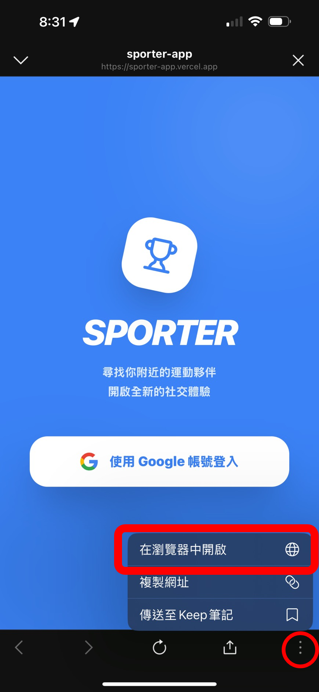
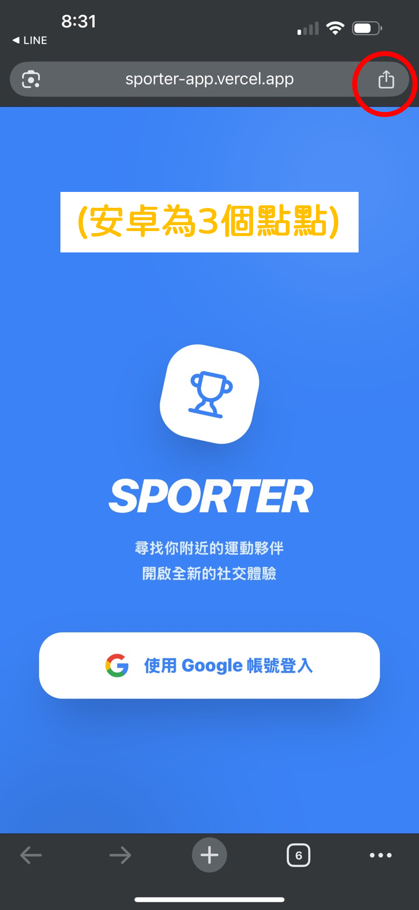
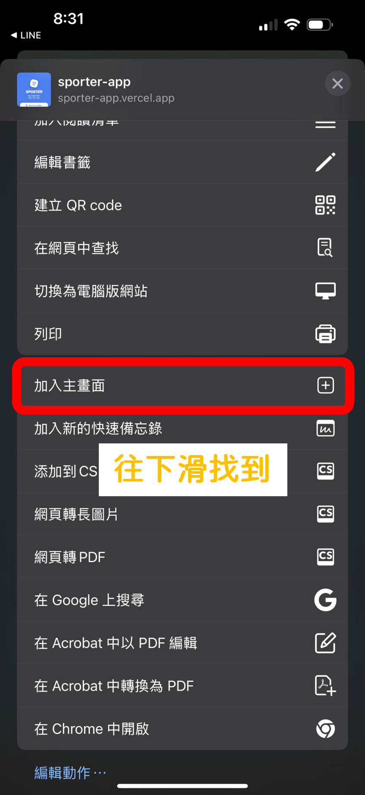
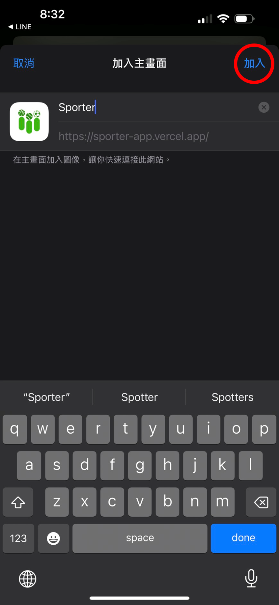

直接透過瀏覽器開啟，不佔用手機空間，隨時隨地享受流暢體驗。
採用最新 Web 技術，提供媲美原生 App 的介面反應與操作手感。
支援 PWA 技術，可將網頁直接縮圖至桌面，像 App 一樣點開即用。
將我們的網頁版 App 加入桌面，享受全螢幕、更快速的運動追蹤體驗。

使用 Safari (iOS) 或 Chrome (Android) 開啟 App 網址。

點擊瀏覽器工具列的「分享」或「選單」圖示。

選擇「加入主畫面」選項。

點擊「加入」或「新增」，Sporter 就會出現在你的手機桌面！